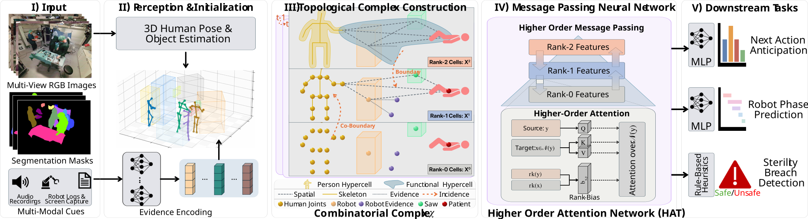
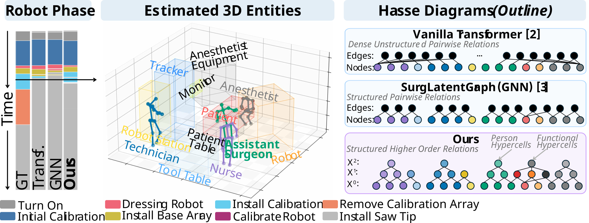

TopoOR: A Unified
Topological
Scene Representationfor the Operating
Room
1 Technical University of Munich2 Munich Center for Machine Learning3 Imperial College London4 Kyung Hee University
Modeling Complex Multi-Modal Surgical Interactions
Surgical actions depend on coordination among people, instruments, and equipment. We introduce TopoOR, the first application of topological deep learning to multimodal scene networks, to explicitly model these interactions. For robot-assisted surgery, for instance, this means modeling the surgeon, robot, saw, and patient as one interacting group.
TopoOR organizes these groups and their constituent entities into a combinatorial complex, combining human poses and object locations with sensor data from cameras, medical devices (e.g., robots), and microphones. Higher-order attention exchanges information between individual entities and the groups they participate in, with temporal links connecting the scene across frames.
How to Represent Relations
Graph
Each edge connects two nodes.
Hover or tap a node.
Edges A–B and B–C do not imply an A–C edge.
For a rigorous treatment of higher-order networks, we refer to Topological Deep Learning.
Method Overview

A Proposed Representation
- Rank 0
- Human joints and objects (3D); evidence nodes for robot logs, monitor images, and audio.
- Rank 1
- Skeleton edges, proximity-based edges, and predefined links such as Technician–Robot.
- Rank 2
- Person cells aggregate each skeleton; functional cells group participants in a surgical interaction.
Higher-Order Attention
Each cell attends to its incident lower- and higher-rank cells. Entity features propagate toward group cells, and group features propagate back to their constituents. A learned bias, indexed by the source and target ranks, adjusts the attention weights.
Image features are sampled at the projected 3D node locations and fused across camera views. Bidirectional temporal edges connect corresponding entities across an eight-frame window.
Results on MM-OR
We evaluate next-action anticipation, robot-phase prediction, sterility-breach detection, and scene-graph relation prediction using the standard train and test splits of the MM-OR dataset. All scores are macro-F1 on a 0–100 scale; higher is better.
| Method | Sterility Breach† | Next Action | Robot Phase |
|---|---|---|---|
| LLM-Based | |||
| MM2SG (Özsoy et al.) | 55.00 | 35.40 | 56.90 |
| Latent & Relational Models | |||
| Vanilla Transformer (Vaswani et al.) | 76.83 | 34.80 | 65.29 |
| SurgLatentGraph (Murali et al.) | 76.83 | 37.46 | 64.61 |
| TopoOR (ours) | 76.83 | 41.10 | 73.53 |
Best results in bold, including ties. † For the Vanilla Transformer, SurgLatentGraph, and TopoOR, sterility is evaluated with shared geometric rules on the estimated 3D scene. This evaluation is independent of the learned action and phase predictions, yielding the same sterility F1 for all three.
TopoOR improves next-action F1 by 3.64 points over SurgLatentGraph (Murali et al.) and robot-phase F1 by 8.24 points over the Vanilla Transformer (Vaswani et al.). Sterility performance is, naturally, tied across all three geometric methods.

Scene-Graph Relation Prediction
A relation head trained on the full complex predicts conventional scene-graph labels, reaching 61.30 F1 versus 52.90 for MM2SG (Özsoy et al.). A simple decision tree restricted to rank-0 spatial entities reaches 43.72.
| Method | F1 |
|---|---|
| MM2SG (Özsoy et al.) | 52.90 |
| Ours (Decision Tree) | 43.72 |
| Ours (Learned Head) | 61.30 |
Incremental Modality Ablation
Adding RGB features to objects and skeletons raises robot-phase F1 from 20.25 to 60.71. Adding robot logs, audio, and temporal links then raises it to 73.53. Each row adds a modality to the preceding configuration.
| Object Nodes |
Human Skeleton |
RGB Images |
Robot Logs |
Audio | Temporal Links |
Next Action | Robot Phase |
|---|---|---|---|---|---|---|---|
| ✓ | — | — | — | — | — | 25.82 | 21.08 |
| ✓ | ✓ | — | — | — | — | 26.26 | 20.25 |
| ✓ | ✓ | ✓ | — | — | — | 36.35 | 60.71 |
| ✓ | ✓ | ✓ | ✓ | — | — | 38.26 | 67.06 |
| ✓ | ✓ | ✓ | ✓ | ✓ | — | 40.57 | 69.63 |
| ✓ | ✓ | ✓ | ✓ | ✓ | ✓ | 41.10 | 73.53 |
Temporal context spans eight frames.
Beyond MM-OR (Limitations)
Our experiments use MM-OR. Further evaluation across surgical tasks, procedures and hospitals would help establish how well the representation transfers to new teams, equipment, and workflows.
Citation
@inproceedings{wang2026topoor,
author = {Wang, Tony Danjun and Kim, Ka Young and Birdal, Tolga
and Navab, Nassir and Bastian, Lennart},
title = {{TopoOR}: A Unified Topological Scene Representation
for the Operating Room},
booktitle = {Medical Image Computing and Computer Assisted Intervention -- MICCAI 2026},
year = {2026},
publisher = {Springer Nature Switzerland},
series = {Lecture Notes in Computer Science},
volume = {16892},
month = sep,
url = {https://papers.miccai.org/miccai-2026/1068-Paper2412.html}
}